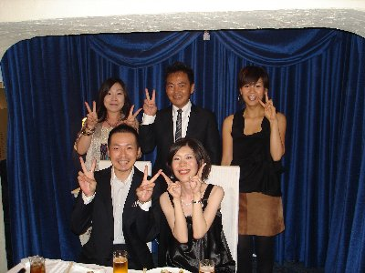

« ミュージック | メイン | 自 動車免許更新 »
2007年08月27日
患者様の結婚式の二次会

昨日、診療が終わってから患者様の結婚式の二次会にお誘い頂いたので、スタッフと出席させて頂きました。新婦様が当院にて矯正されていますが、この ときばかりは一端、装置を外し結婚式に望んで頂きました。また、新郎様もよくご一緒にご来院されていました。非常に仲の良いカップルです。会はお二人の人 柄が表れた心温まるもので、感動しました。ドクターとしてただ歯並びを治すだけでなく、こういったお付き合いをさせて頂けることを嬉しく思っています。有 難うございました。
ＰＳ． 小山様、平岡様飲み会のお礼有難うございます。
Ｓａｙａｋａ様、ご指摘有難うございます。実は勉学はあまり好きじゃないので（こんなこと書いたらダメですが・・・）、又、機会をみてお話させて頂きま
す。
Ｍｒｓ．ｋｏｒｕ様 そうなんです。ご指摘の通り私はオトコマエなんです（笑）。
ｋｅｉｉｃｈｉ様 阪神残念ですが、戦いは9月です。このままずるずるとはいかないと思いますが、ただ、中日、巨人と比べ先発ピッチャーが弱いのが気がか
りです。
投稿者 otsuka : 2007年08月27日 15:50
コメント
嶋谷です。
先日はお忙しい中、2次会にご出席頂き本当にありがとうございました。皆様のおかげでとても楽しく幸せな1日になりました。式でも披露宴でも、キレイに
なったと言って頂くことができました。そんなこと言われたことがないので…、これも先生を初めスタッフの皆様のおかげです。本当にアリガトウございまし
た。
私も矯正したい。と言っていた子がいたので、新郎と2人で大塚矯正歯科サイコ－！！と叫んでおきました（＾＾）
投稿者 ｓ.emiko : 2007年08月28日 15:17
先生昨日の試合、どう思いますか？ＪＦＫ投入して、やっとドロー。まぁ、一戦、一戦こうして耐えてこそとも思いますが、ＪＦＫ投入した試合なんと
か勝ち星にしたいです。
ところで、先生このお写真、顔の日焼けからしてすごいスポーツマンに見えますね。やっぱ、オトコマエです。＾＾
投稿者 keiichi : 2007年08月29日 06:16
大塚先生お忙しいでしょうに、来院されてる方の披露宴の２次会にスタッフの方とお出かけになるのって、付き合いの良い、やさしく、配慮のあるドク ターなんですね。素敵な方ですね。＾＾
投稿者 Mrs.kaoru : 2007年08月29日 06:20
大塚先生この写真から見ると、背も低く見えませんね。けっこうカッコイイＤｒ．ですね。＾＾
投稿者 sayaka : 2007年08月29日 06:24